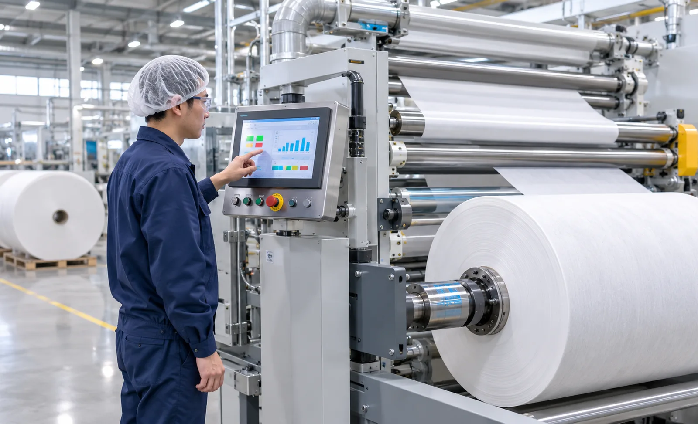
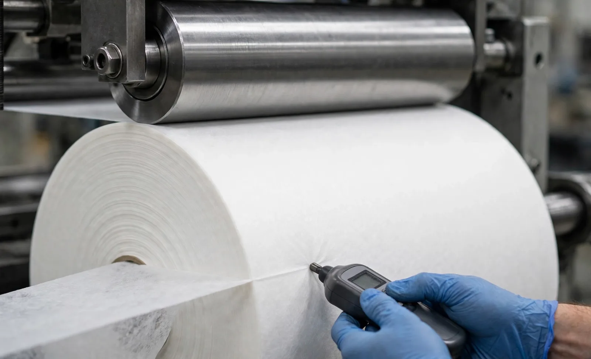

Published November 20, 2026 | By HDPTH Technical Editorial Team

When buyers compare slitter rewinders they grade the visible things: top speed, slitting methods, tension accuracy. Then the first production week passes and the phone rings — rolls that measured perfectly on the machine now show soft bands and raised bumps in the warehouse, the customer’s unwind runs unevenly, and the fault cannot be reproduced at the slitter. The explanation is usually wound-in air: air that rode into the roll on the web surface and was never expelled at the nip. It is invisible at winding speed, it develops over hours of rest, and it is the one defect class tension control alone cannot cure. This guide explains where the air comes from, what it does to a finished roll, and how to specify a machine that manages it.
What wound-in air is and where it comes from
Every moving web carries a boundary layer of air on both surfaces. At low speeds this film is thin and the rewind nip — the line contact where the incoming web meets the growing roll, pressed together by a lay-on roller or by the winding geometry itself — simply squeezes it out ahead of each new wrap. As speed rises, the air film thickens and behaves like a wedge: it lifts the web off the roll surface, and when the lay-on roller presses the next wrap into place, part of that air remains between the layers. Nonwovens make the problem worse in three ways. A thick, permeable web entrains more air than a dense film; its thickness bridges a larger gap with every revolution; and a resilient web behaves like a spring, pushing trapped air back into the package instead of letting the nip collapse it. Once wrapped inside, the air can only migrate laterally along the roll or slowly outward through the permeable structure — which is how a roll that was round and hard at winding becomes soft and deformed a day later.
The symptoms: bumps, starring, soft edges and shifting hardness
Wound-in air expresses itself through a recognizable family of defects, and knowing them helps a buyer separate air problems from tension problems. Bump formation — raised areas that feel like blisters under the hand — marks pockets of trapped air that survived at the nip and expanded as the roll relaxed. Starring, the spoking pattern at the roll ends where wraps loosen and buckle outward, typically follows when air collected near the core and the inner wraps lost their grip. Soft or low-density roll edges are the signature of air migrating sideways along the lay-on contact: the nip rides on an air cushion that escapes toward the ends, leaving the outer bands under-wound. And roll hardness that reads differently on the same roll from one day to the next almost always points to air rather than tension, because a tension fault is frozen into the roll at winding, while air keeps working its way out afterwards. Each of these defects ends the same way: rejected rolls, claims from customers whose unwinding process hunts and breaks, and troubleshooting that starts at the wrong place.
Machine design choices that control air entrainment
The first lever is the lay-on system. A smooth, generously covered lay-on roll gives the best contact for dense webs, but with bulky materials it can ride on the air cushion and glide over the problem, letting air escape toward the roll ends as soft edges. Machine builders therefore offer alternatives: lightly grooved or spiral-grooved lay-on surfaces that give trapped air a defined escape path, porous or open-cell coverings that breathe under the nip, and larger-diameter lay-on rolls that wrap more contact arc around the package. The second lever is how nip pressure is distributed. A short, stiff lay-on beam concentrates load near its supports and leaves the roll edges lighter — precisely where soft edges form — while a balanced system with independent edge zones holds uniform line pressure across the full width. The third lever is winding geometry itself: centre winding with a positive nip contact keeps the package gripped regardless of surface air, whereas pure surface winding loses authority exactly when the air cushion is thickest. None of these choices is universally right; the correct combination depends on the material’s thickness, permeability and resilience, and must come out of trials on the buyer’s own web rather than a catalogue default.

Operating parameters: nip load, tension profile and speed
Between the machine you buy and the roll you ship sit the operating settings, and two dominate the air balance. The first is nip pressure, and the honest rule is that more is not better — only correct is better. Insufficient load leaves the air cushion intact; excessive load damages soft products, imprints the covering into nonwovens, and can push air sideways along the web faster than it is expelled, aggravating soft edges. On a well-specified machine the lay-on load is calibrated, repeatable and settable per recipe, not a hand-turned lever guessed at by whoever runs the shift. The second parameter is the tension profile through the wind. Wound-in air and taper tension are deeply linked: a falling tension profile lets each successive wrap sit slightly looser, giving trapped air room to escape from the roll structure in the first minutes after winding, while a flat or rising profile seals every wrap shut and locks the air inside. Speed is the multiplier — the air film thickens with velocity, so a line qualified at 250 m/min may show perfect rolls that turn bumpy when the same product runs at 450. Buyers should therefore define with the machine builder the maximum winding speed at which their material stays free of air defects, and treat that number as a process window with the same status as slitting quality.
Why bulky nonwovens deserve their own specification
For a machine builder supplying both film and nonwoven lines, wound-in air is the clearest example of why a nonwoven rewinder is not a film rewinder with different knives. Spunlace, airlaid and thermal-bonded webs — thick, permeable, resilient — sit at the worst corner of the air-entrainment map: maximum carried air, maximum thickness, maximum spring-back. Hygiene and medical lines convert these materials into large-diameter rolls at hundreds of metres per minute, multiplying every term of the problem. The consequences reach downstream too: a soft-edged or starred roll unwinds with varying tension, which destabilizes the next process — folding, embossing, laminating — so air trapped at rewinding resurfaces as defects in the customer’s process even when their own machine is perfectly adjusted. This is the practical reason to buy nonwoven rewinding capability from a supplier who tests on bulky webs, and to be sceptical of quotations that demonstrate winding quality on film or dense paper because those materials are easier to run.
Specifying wound-in air performance in a machine order
Air control is bought like any other machine function: written into the requirement specification, demonstrated at the FAT, documented for acceptance. Four clauses cover it. First, a material clause: the heaviest and bulkiest web the machine must wind — gsm, thickness, permeability class — stated explicitly, with the lay-on covering, nip system and winding geometry proposed against it. Second, a performance clause: a guaranteed roll hardness profile measured end to end on rolls wound from the buyer’s own material, a density or thickness band across and along the roll, and a surface free of bumps and starring after a defined rest period. Third, a settings clause: calibrated, recipe-storable lay-on load and tension profile setpoints, so the qualified window survives operator changes. Fourth, a test clause: the winding trial run at production speed on production-diameter rolls during the FAT, with the lay-on equipment that will actually ship. Specified this way, the invisible defect becomes a measurable acceptance criterion — and a warehouse of perfect-looking rolls degrading overnight stops being a routine surprise.
Wound-in air is one layer of the winding-quality picture, and it interacts with the two settings covered in depth by the Slitter Rewinder Lay-On Roller and Nip Pressure Guide and the Taper Tension Profile Settings on Slitter Rewinders: Buyer’s Guide. To see how these rewind disciplines are built into a production machine range, review the HDPTH high-speed slitting machines series.
Winding Bulky Webs That Stay Dense and Round?
Send HDPTH your material, gsm, roll diameter and speed targets. Our application engineers will propose the lay-on system, nip architecture and tension profile for your product — and verify the roll hardness and density results in a FAT winding trial on your own material before the machine ships.
Submit Your Project InquiryFrequently asked questions
What is wound-in air in slitter rewinding?
Wound-in air is air carried into the wound roll on the moving web surface instead of being squeezed out at the rewind nip. Nonwovens and other porous or textured materials ride on a cushion of boundary air, and at winding speeds above a few hundred metres per minute the lay-on nip cannot expel all of it before the next wrap closes. The trapped air separates adjacent layers, producing low-density zones that later show up as bump formations, starring, soft edges and unstable roll hardness.
Why are bulky nonwovens more prone to wound-in air than films?
Bulky nonwovens such as spunlace, airlaid and thermal-bonded webs are thick, permeable and resilient. Their open structure entrains more boundary air at the web surface, their thickness means a larger air gap closes with every revolution, and their springiness pushes trapped air back into the wound package instead of letting the nip collapse it. Dense films carry far less air into the nip, which is why a machine that winds film perfectly can still produce soft, bumpy nonwoven rolls if the rewind geometry was never qualified for bulky materials.
Does higher lay-on nip pressure always fix wound-in air?
No. Increasing nip load squeezes out some air, but beyond an optimum it starts damaging the product: soft nonwovens imprint the roll surface, embossed or patterned webs lose texture, and densified webs see a thickness loss that customers notice. Excess nip pressure can also push air sideways along the web instead of expelling it, making soft edges worse. The correct answer is usually a combination of moderate, uniformly distributed nip load, a roll covering and geometry matched to the material, and a tension profile that collapses the air gap progressively.
Should a buyer specify a smooth or a grooved lay-on roll for nonwovens?
Smooth nips give the best contact for dense webs but ride over a thick air cushion with bulky materials, letting air escape toward the roll ends as soft edges. A lightly grooved or spiral-grooved lay-on surface, or a porous covered roll, gives trapped air a defined escape path and works well for thick nonwovens — at the cost of a faint surface impression on very soft products. Because the trade-off differs by material, buyers should ask the machine builder which covering and surface geometry was tested on their specific web, and verify it during a material trial rather than assuming one solution fits all.
How can wound-in air performance be verified before purchase?
Specify it as a measurable acceptance criterion. State the material, gsm, width and maximum speed, then require a test at the machine builder’s plant winding your own parent rolls, with roll hardness profiles measured end to end on an agreed instrument, density checks across and along the roll, and a visual surface inspection for bumps or starring after 24 hours of rest. Put the acceptable hardness variation and edge-density band into the FAT protocol so the machine either demonstrates the numbers or the build is adjusted before shipment.